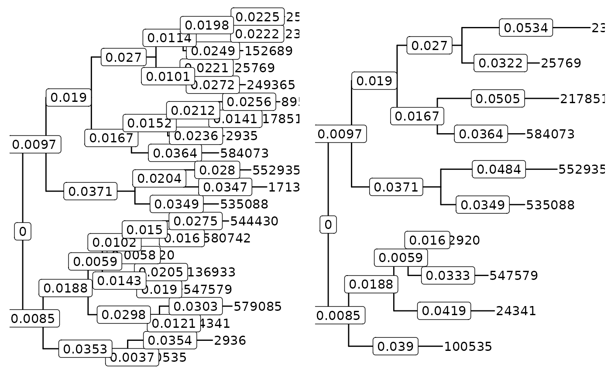

This function merges taxa that are sufficiently closely related in the tree
in phy_tree(physeq). It is similar to tip_glom(), except that it uses
the tree directly, rather than as the basis for hierarchical clustering.
tree_glom(physeq, resolution, criterion = "max_tip_depth", tax_adjust = 1L)
| physeq | |
|---|---|
| resolution | Phylogenetic resolution at which to merge taxa. |
| criterion | Criterion for determining whether to collapse taxa. See
|
| tax_adjust | 0: no adjustment; 1: phyloseq-compatible adjustment; 2:
conservative adjustment (see |
A physeq object with new taxa reflecting the phylogenetically
merged groups.
This function uses castor::collapse_tree_at_resolution() from
the castor package to determine the groups of taxa to be collapsed; see this
function for details about the resolution and criterion parameters.
New taxa are named according to the most abundant taxon of each group. The tree, reference sequences, and (by default) the taxonomy table reflect these "archetype" taxa.
castor::collapse_tree_at_resolution() for more information about the
resolution and criterion parameters.
merge_taxa_vec() for more about tax_adjust and general merging behavior
tip_glom() for indirect phylogenetic merging
tax_glom() for merging using taxonomy
#> [1] 21#> [1] 10suppressPackageStartupMessages(library(dplyr)) suppressPackageStartupMessages(library(ggtree)) suppressPackageStartupMessages(library(cowplot)) plot1 <- phy_tree(ps1) %>% ggtree + geom_tiplab() + geom_label(aes(x = branch, label = round(branch.length, 4)))#>#>plot2 <- phy_tree(ps2) %>% ggtree + geom_tiplab() + geom_label(aes(x = branch, label = round(branch.length, 4)))#>#>